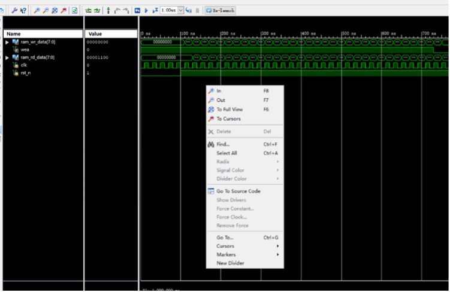

数字电路实验（二） FPGA中IP核的使用
实验目的
- 了解RAM/ROM IP核的概念并掌握基本读写方法；
- 以VGA视频编码格式为例，了解FPGA的使用范围；
- 根据提示修改代码，实现VGA视频输出中图片的旋转和移动等功能，在此过程中进一步了解时序逻辑。
预习材料
- RAM/ROM IP核（知识产权核）的概念、基本读写方法：基于IP核的FPGA设计 - 知乎 (zhihu.com)
- Xilinx ISE软件教程：ISE14.7手把手使用教程：建立工程、仿真、下载bit流、程序固化、以及一些常见的坑_米多奇米饼的博客-CSDN博客
实验器材
Basys 2开发板，笔记本电脑1台（提前安装Xilinx ISE 14.7）。实验步骤
- 建立并调用RAM IP核，修改Memory Type为 Single Port RAM，修改位宽为8，深度为32，模式为Write First；
- 建立仿真文件，并在ISE中运行仿真程序；
- 查看仿真时序结果；
 仿真结果中，读数据比写数据晚一个时钟，这与之前的设置有关，可以尝试改为Read First，再仿真一次并观察结果 - 建立ROM IP核，修改Memory Type为 Single Port ROM，修改位宽为8，深度为4096，Memory Initialization选择从coe文件（课前提供，存储需要输出的图像）加载（路径不能含有中文）；
- 将电脑连接到FPGA开发板，导入顶层文件、约束文件，实例化IP核；
- 将开发板的视频输出接口与显示器相连，在屏幕上输出箭头图案。
写在coe文件中的箭头图案最终经由开发板输出到显示器上